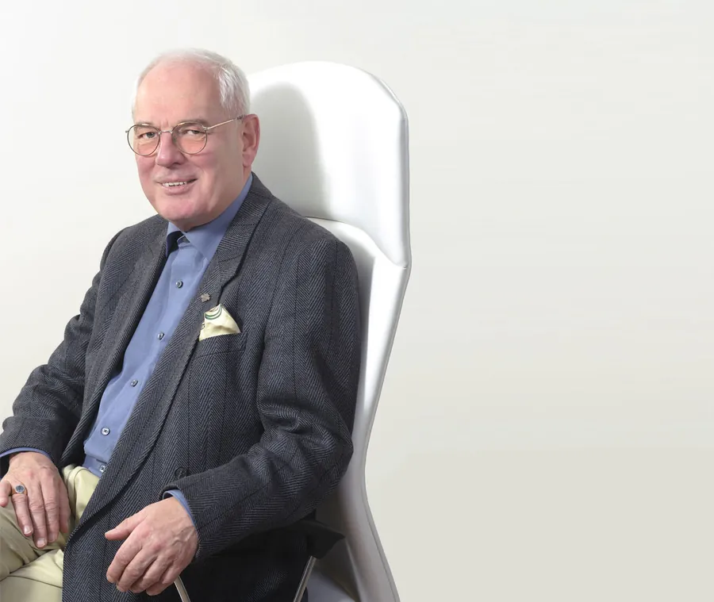

Dr Helmut Brammer
President of the German-French Society for Thymus Therapy; Founder of the German Medical Society for Chelation Therapy
Dr Brammer has been practising cellular therapy for over 30 years for various indications and has achieved amazing results. He has successfully utilised Lyophilised Fresh Cells (LFC) to improve the lives of patients suffering from so-called incurable diseases. In honour of his achievements, Dr Brammer has been elected as the President of the German-French Society for Thymus Therapy, Germany. He is also the founder of several medical associations as well as the German Medical Society for Chelation Therapy in Germany.
Medical Specialties- Cellular Therapy
- Surgery
- Internal Medicine
- Homeopathy
- Psychotherapy